PR83 · revised Solar preview
Owner visual acceptance pending. Actual WebGL captures at 28 Feb 2026 00:00 UTC. Same viewport and selected state; camera composition changed, so these are not pixel-identical camera comparisons.
Open the working preview · Qualification and remaining gaps
Exact approved primary reference

The concept includes extra bodies, asteroid debris and night-side lights outside this qualified three-body slice. Astronomical positions are not rearranged to match it.
Adaptive Explorer reference

1440 × 900 · overview
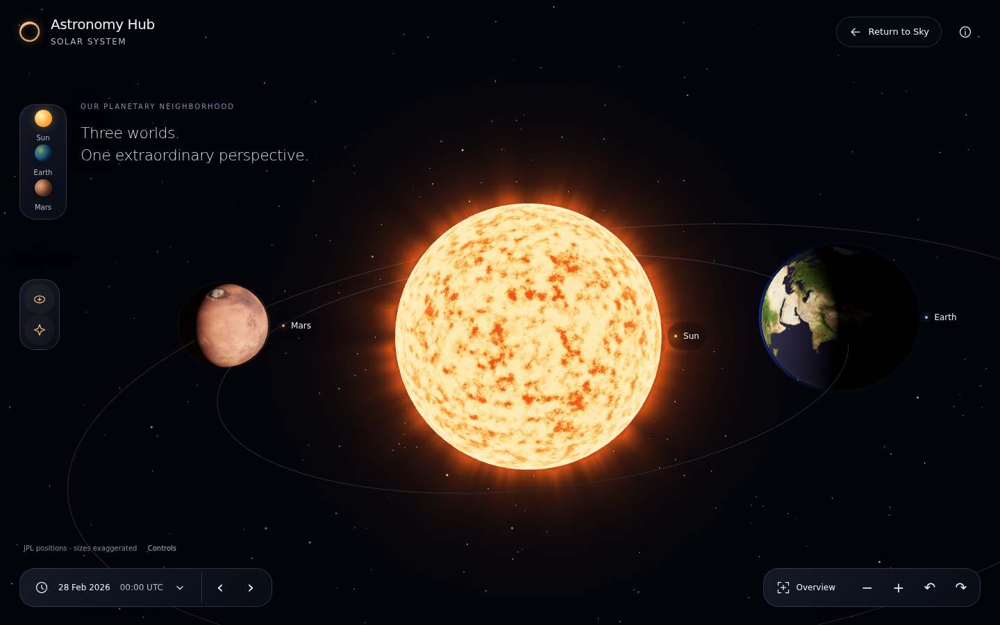
Before · reviewed 23806bca, fresh capture this pass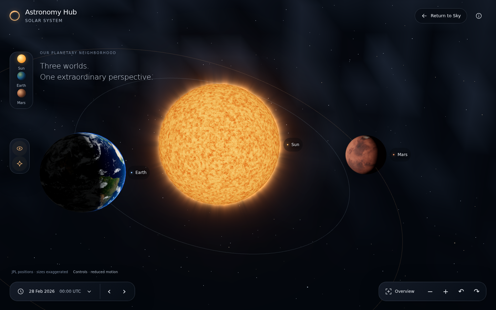
Refinement · source-matched actual scene, same UTC1440 × 900 · earth
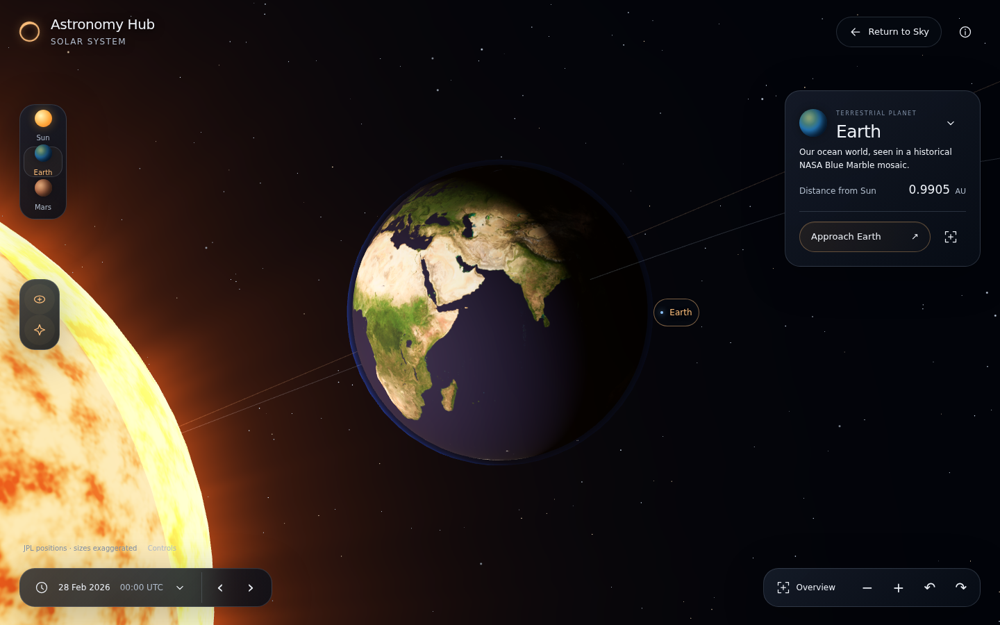
Before · reviewed 23806bca, fresh capture this pass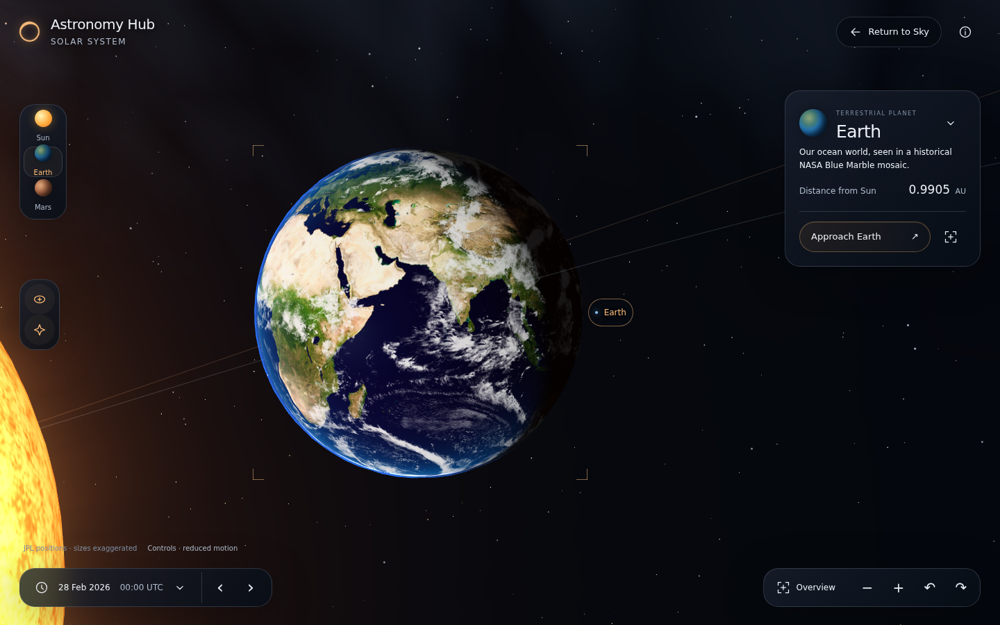
Refinement · source-matched actual scene, same UTC1440 × 900 · mars
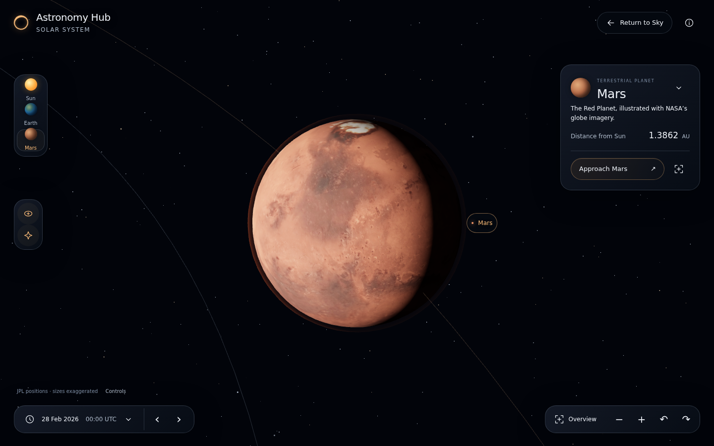
Before · reviewed 23806bca, fresh capture this pass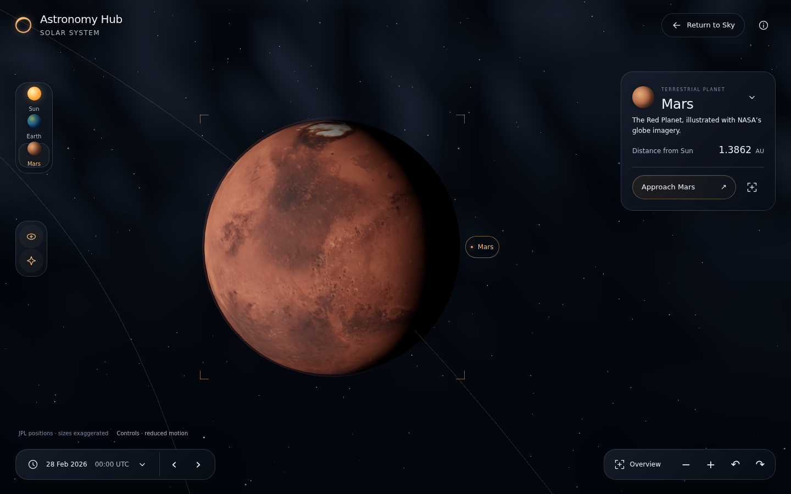
Refinement · source-matched actual scene, same UTC390 × 900 · overview
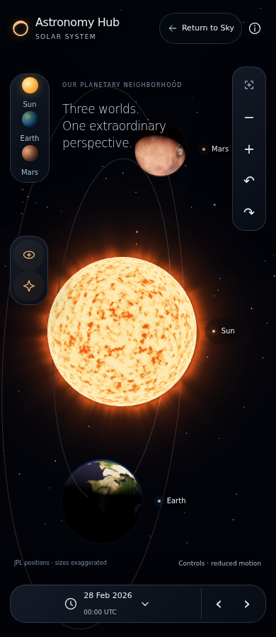
Before · reviewed 23806bca, fresh capture this pass Refinement · source-matched actual scene, same UTC
Refinement · source-matched actual scene, same UTC390 × 900 · earth
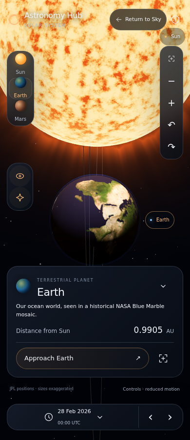
Before · reviewed 23806bca, fresh capture this pass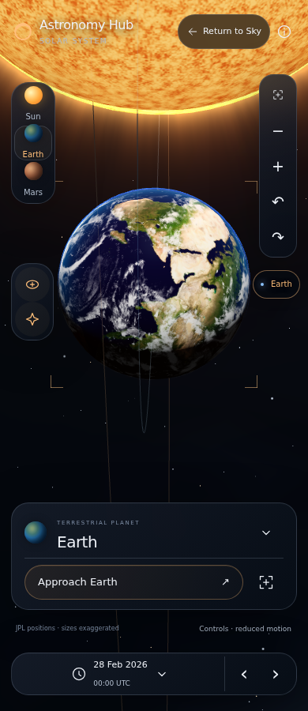
Refinement · source-matched actual scene, same UTC390 × 900 · mars
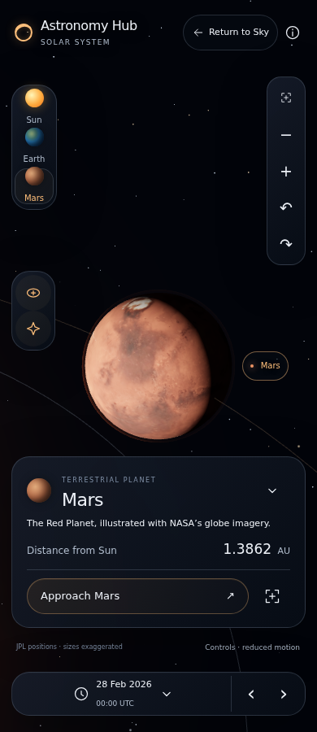
Before · reviewed 23806bca, fresh capture this pass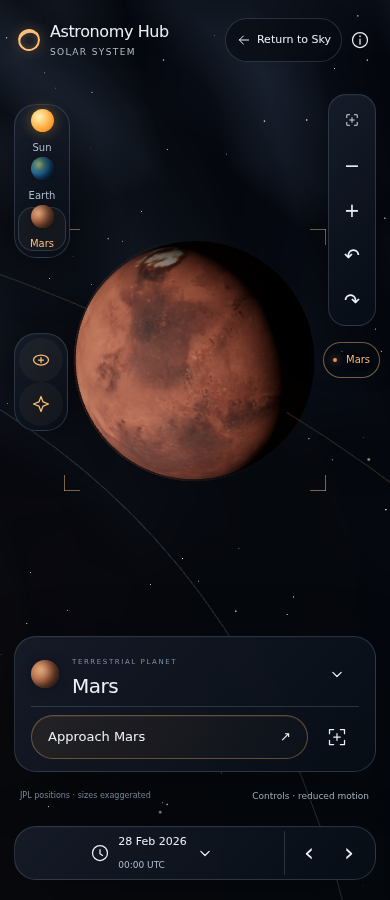
Refinement · source-matched actual scene, same UTCRefined solar photosphere and close approach
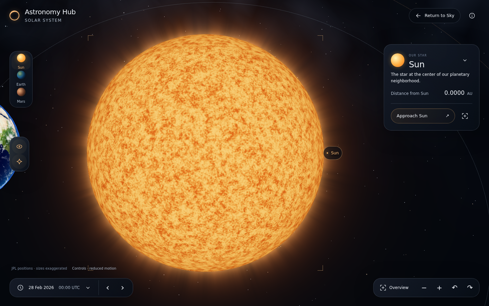
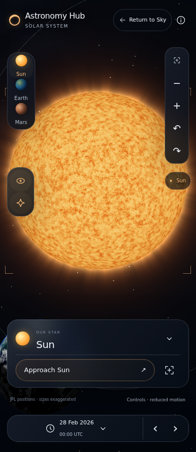
All Sun/corona/haze/point effects are illustrative. Earth clouds are NASA historical imagery, not live weather. See the linked gap matrix; tests are not visual acceptance.